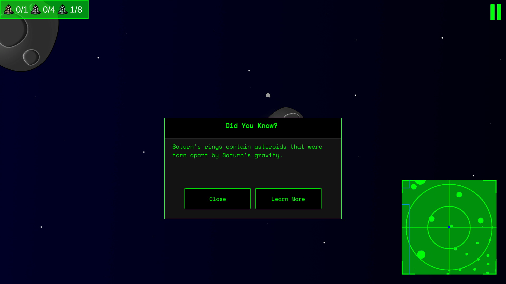
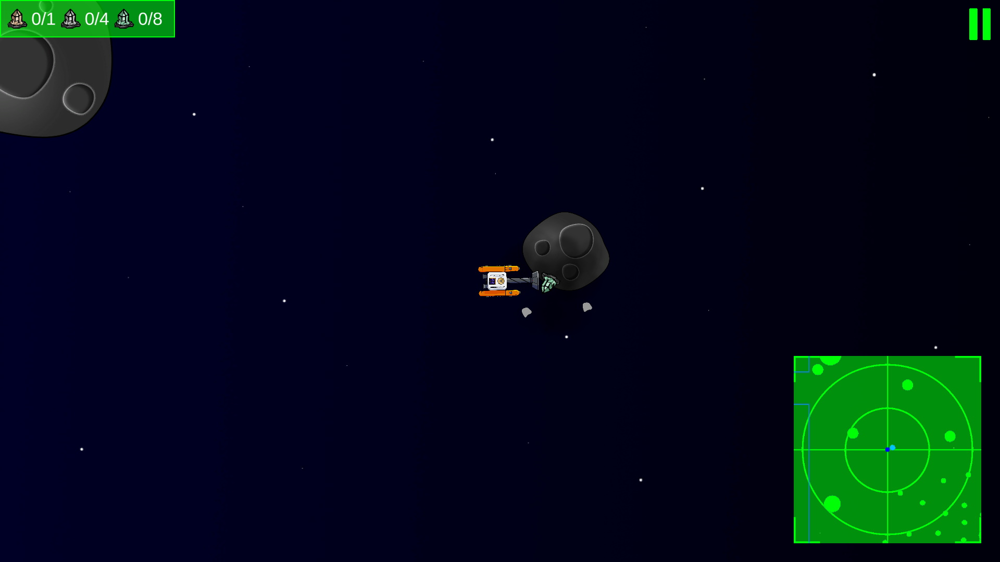
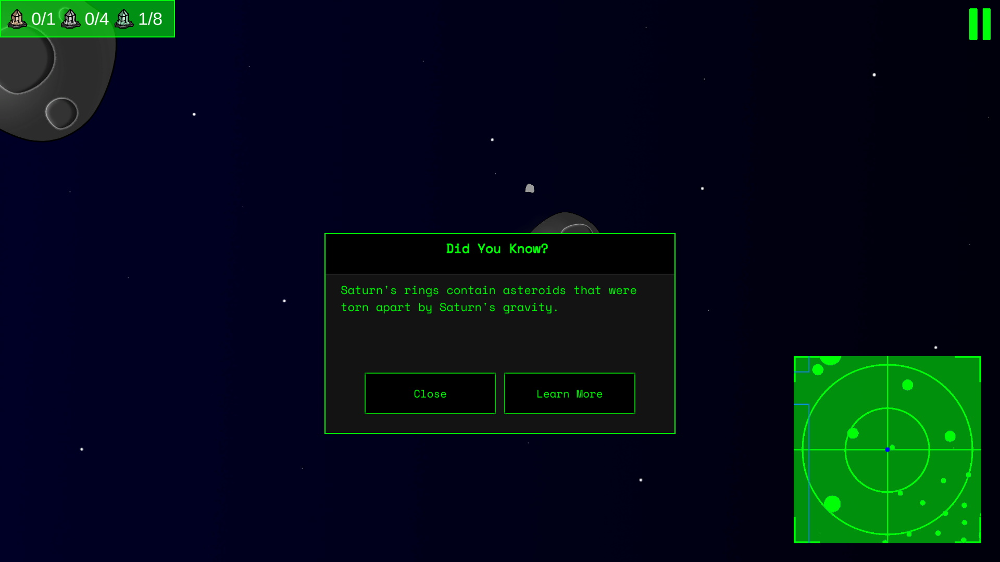
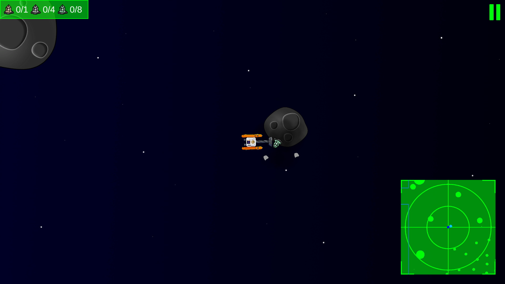

Space Collector is a web-based 2D edutainment game I developed in a group of 5 for my senior capstone project.
In the game, players explore 3 open-ended levels with the goal of mining resources from asteroids.
On this project, I took the role of Lead Programmer, as well as level designer and UI designer.
Play the game on itch.io here.
 



Design
The main gameplay loop of Space Collector involves exploring and mining. When the player mines a bonus
mineral deposit, a quick space fact appears on screen with a link to another web page with more information.
We specifically chose to deploy the game through WebGL so that it could be played on any device without
having to download files, making it easier to implement in a classroom.
The game is intended to be accessible to players who do not have lots of game literacy. The difficulty is
generally kept low, but mining bonus asteroids can be more challenging.
Player Movement
As lead programmer, I was responsible for designing and implementing the movement mechanics. The movement is
largely based off of Asteroids, with the exception that the player's momentum is preserved indefinitely, rather
than magically slowing down when the thrusters are inactive.
This created some problems with difficulty, so to reduce that I added a "brake" input that automatically fires
thrusters to bring the player to a stop. It also became difficult to turn accurately, so I implemented logic that
detected when the player was trying to turn while moving and pushed the player in the direction they were trying
to turn, proportional to the current movement speed. These two features made the ship significantly easier to
control.
User Interface
I was also responsible for developing all the animated UI elements in the game, such as the educational pop-ups
that appear when the player mines a deposit, and the exposition screen at the start of the game.
The pop-ups were developed off of a free modal UI pack on the Unity store. I modified the visuals to give it a
more technological aesthetic, added animations and sound for the text as well as the pop-up itself, and added
custom buttons. I also wrote a custom UI manager which allowed other teammates to control the pop-ups from
unity events in the editor without having to write dedicated scripts.

Level Design
I designed the final level of the game, which sees the player collecting samples from a ring of asteroids
rotating around a larger one. The asteroid is large enough to have a significant gravitational pull, which the
player has to take into account when navigating.
This level is the most difficult, so I made sure to place most of the mineral deposits in spots that did not
require complex button inputs to reach. The time it takes to mine the deposits in this is level is also reduced
by several seconds since the asteroids they are attached to are always moving.